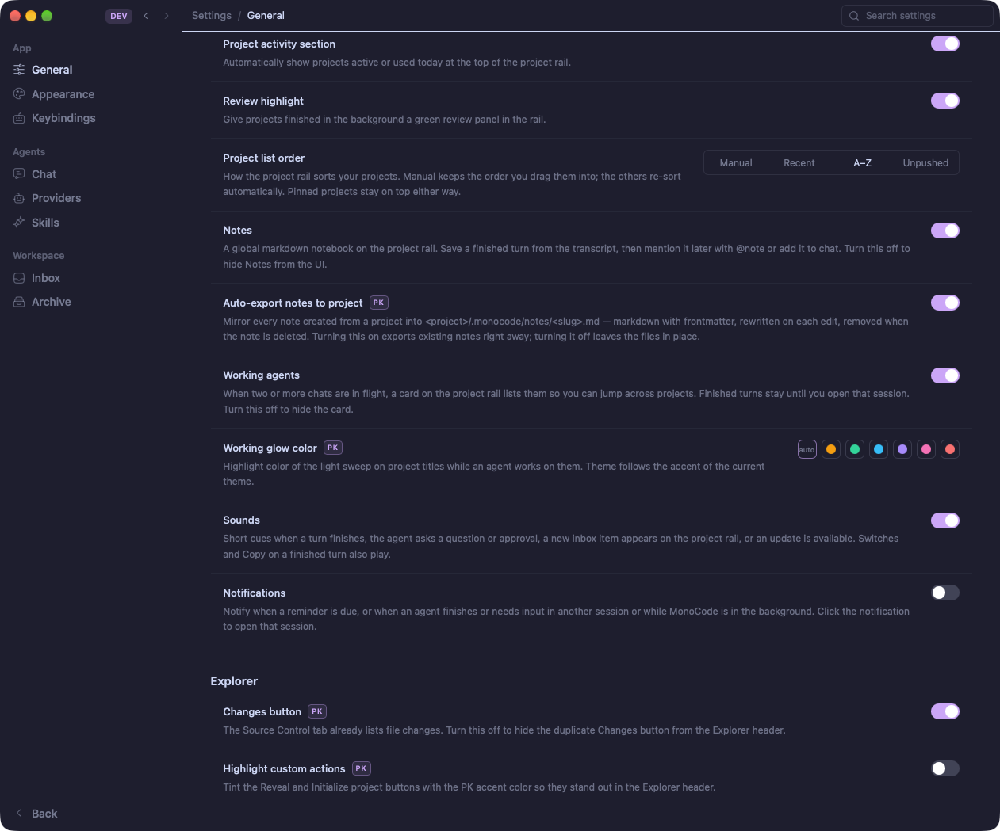
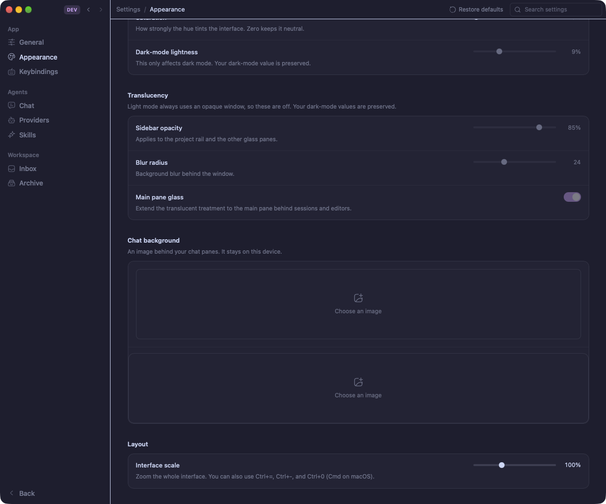

01 / SESSIONS
Multisélection & actions groupées
Sélectionne plusieurs sessions, archive, tague ou déplace en un geste. Ancre de sélection, raccourcis clavier, états persistés.

02 / QUOTAS
CodexBar en footer, tout le temps
Codex, Z.AI, GLM : jauge de consommation par provider, chip de provider actif, rafraîchissement silencieux. Plus jamais de surprise de quota.

03 / NOTESNotes par projet
Filtre live, chips de catégorie, édition riche, export Markdown vers le projet.
04 / PROVIDERSProviders réels
Z.AI GLM, MiMo, OpenRouter, NVIDIA, Gemini, Antigravity + providers personnalisés OpenAI-compatibles.
05 / SYSTÈMEDeux axes de version
Officiel amont + ligne PK : les mises à jour se fusionnent proprement, l'app du quotidien ne casse jamais.